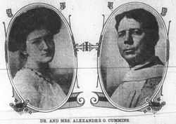

|
|
【奔主的路】 |
|
|
1 I know not where the road will lead
2 And some I love have reached the end,
3 The countless hosts lead on before,
|
每天每時所行的路，導引我向何方？ |
|
|
|
||
|
|
|
|


| Text: | I know not where the road will lead |
| Author: | Evelyn Atwater Cummins, 1891-1971 |
| Tune: | LARAMIE |
| Composer: | Arnold George Henry Bode, 1866-1952 |
| Short Name: | Evelyn Atwater Cummins |
| Full Name: | Cummins, Evelyn Atwater, 1891-1971 |
| Birth Year: | 1891 |
| Death Year: | 1971 |
Born: May 17, 1891,
Poughkeepsie, New York.
Died: August 30, 1971, Poughkeepsie, New York.
Cummins attended the National Cathedral School in Washington, DC, and the Masters School in Dobbs Ferry, New York. She married Alexander G. Cummins, rector of Christ Church in Poughkeepsie, New York. An active writer, she served as the associate editor (1926-46) and publisher (1946-47) of The Chronicle, and was also associated with The Living Church (1926-29), and the Poughkeepsie Evening Star (1940-43).
In the civic arena, Cummins served with the Poughkeepsie War Council, the Diocesan Board of Religious Education, the Federal Council of the Churches of Christ, the Visiting Nurses Association, the Young Women’s Christian Association, the Poughkeepsie City Library, and the Vassar Brothers Hospital. She became the first woman police commissioner in New York state, and was both police and fire commissioner in Poughkeepsie, and served on the police advisory board for the New York State Safety Division.
--www.hymntime.com/tch/
http://www.hymntime.com/tch/bio/c/u/m/m/cummins_ea.htm

https://www.findagrave.com/memorial/152937741/evelyn-a-cummins
I know not where the road will lead
I know not where the road will lead. Evelyn Atwater Cummins* (1891-1971).
Written in 1922, this must be one of the first hymns to have been inspired by
the radio. Cummins recalled that she was unwell, and unable to attend church, so
she listened with earphones to a sermon by Dr Samuel Parkes Cadman (1864-1936, a
pioneer religious broadcaster) on the topic of ‘The King’s Highway’. She
continued: ‘the title sort of stuck in my head, and so I thought I would put
down what the King’s Highway meant to me’ (The Hymnal 1940 Companion, 1949, pp.
269-70). She sent the hymn to Dr Cadman, who read it on the radio on several
occasions. It had six 4-line stanzas, each ending ‘I walk the King’s
https://hymnology.hymnsam.co.uk/i/i-know-not-where-the-road-will-lead